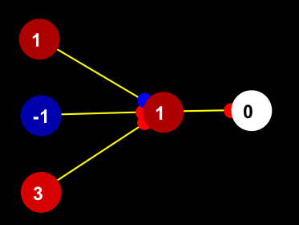
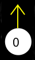

Network Component
Introduction
Quick reference
Running
the network
Update cycle
Building nets
Selecting screen items
Cut, copy, and paste
Toolbar
Build Toolbar
Popup menus
Menus
Keyboard commands
Manually adjusting neurons and weights
Node and weight preferences
Network preferences
Network-world button
Input and output nodes
Network file format
Simulations and simulation files
The network component is used to build neural networks which simulate circuits
in an organism's brain.When the network is used in conjunction with the world
component,
the network represents circuitry in the creature's  brain
(for more see network-world interaction).
brain
(for more see network-world interaction).
Shown below is a simple neural network in Simbrain. The colored circles with numbers in the middle represent simplified neurons or "nodes" [0] . The lines between nodes represent synaptic connections between neurons which direct the flow of activity in the network. The smaller blue and red discs at the ends of these lines represent synaptic connections.

Red nodes represent "excited" neurons, white nodes represent inactive
neurons, blue nodes represent "inhibited" neurons. The numbers inside
the neurons represent their "activation level" (we can think of the
absolute value of this number as representing the rate of a firing of a
neuron). Red weights represent excitatory synaptic connections, blue weights
represent inhibitory synaptic connections. The diameter of the discs represent
their strength (all of the weights above have the same absolute value). Activation
flows along the connections in the direction of the discs. Activation flows from
left to right in the network above. Since this network is not connected to the
world component (it has no input
or output nodes),
to experiment with this network a user would normally adjust the activation
of the left-most nodes by hand (see manual adjustment
of neurons and weights), and then use the single step key  to
iterate the network (applying the network update algorithm).
to
iterate the network (applying the network update algorithm).
To experiment with the network above, open the file "3-1.net" in the "simple" directory using the open command in the network menu. The network works as follows. The three neurons on the left can be manually adjusted by the user and their output strengths are identical to their activation levels. The activation of the neuron in the middle is the sum of the products of the output signals of the left-most neurons with their corresponding weights. The blue weight has a strength of -1, and the red weights have strength of 1. Thus the activation of the middle node, "1", is given by "(1 x -1) + (-1 x 1) + (3 x 1) = 1". The middle node will only send a signal to the right-most neuron if its activation level is 2 or more, hence it does not fire in this case, and the right-most neuron is inactive.
Simbrain can be used to create a wide variety of neural networks, by creating and connecting nodes (see building networks) and by setting the properties of individual nodes and weights (see preferences). Users are advised to consult a reference to neural networks, such as this one, on the web, for more general information on how neural networks work.
Run the network : Use the
button to run the network, and the
button (or the "space" bar on the keyboard) to single-step the network. For more click here.
Create neurons: Press the
button or press "N". Neurons will be created at a default location, at the last location you've clicked on the screen, or to the right of the last created neuron (hence pressing
Connect neurons : Select one or more source neurons then either (1) right-click or control-left click on the target neuron and choose "connect" in the pop-up menu or (2) left-click on a target neuron while holding down the option and control keys. For more click here.
Select screen-items: Left-click to lasso. Shift-left-click or lasso unselects or reselects what is already selected. Keyboard "N" selects all nodes, "W" selects all weights, "A" selects all. For more click here.
Copy /paste: Control-c copies selected items and control-v pastes them at the last point clicked on screen. Copying and repeatedly right-click and pasting at desired locations can be used to create many duplicates of the same network pattern. For more click here.
Increase / decrease values of nodes or weights. Use the arrow keys on selected objects. Or open the neuron or weight preference dialogs and manually change activation (neurons) or strength (weights). For more click here.
Open / Save network. Use save, save-as, and open in the network menu.
Change properties of nodes or weights. Select the neurons or weights you want to change and double-click on of the selected items. You can also use right-click and the popup menu or the network menu. If you select both weights and neurons, which preference dialog comes up depends on which kind of item you click on.
Nudge. Hold down shift and press the arrow keys to nudge selected objects. For more click here.
When Simbrain is first opened nothing happens. A sample network sits passively before the user. When the user "runs" the network it comes to life--an update algorithm is repeatedly called, which is visible in the form of spreading activity in network's nodes and (if learning is activated) changing weight sizes. The network can be run in any of the following ways:
1. Press the play button
. Pressing this button will stop the network. Thus the play/stop button acts as a toggle switch.
2. Press the step button
3. Move the creature in the world component (assumingnetwork-world interaction is set to both-ways or world-to-network.
Each time the network is updated the following six procedures are invoked:
1. A set of values is sent to the input nodes of the network based on the position of the creature in the world. (Or, if nework-world interaction is turned off, one can manually adjust the input nodes)
2. The network is updated by going through the nodes and updating each one [1]. The node currently being updated can be thought of as a "target" node; the nodes which connect to it can be thought of as "source nodes." Each target node is updated as follows:
2.1 The signals being sent to it are determined. These signals are provided by the output functions of source nodes. Output functions produce an output signal based on the activation level of a node. There are a variety of output functions available to each node. which are documented in the node-preferences dialog box. The simplest output function is the identity function, which simply outputs the activation level as is. Another common output function is a threshold function, in which case a node will only produce an output, if its activation is above some specified level. Note: Output signals are not visible in the GUI; only activation levels and weight strengths are visible.
2.2 That node's activation function is called. This function updates the activation level of a target node based on signals arriving from source nodes, and the weights connecting source nodes to the target node. Again there are a variety of activation functions available. A common activation function is a linear function which forms a weighted sum from incoming signals and weight values. Documentation on each activation function can be found directly in the node-preferences dialog box. The activation of a node is visible in the GUI as color and it is printed as text. Activation values are also sent to the gauges [2].
3. Each weight's update function is called. As with nodes, the order in which these functions are called does not matter. Documentation on each learning function can be found directly in the weight-preferences dialog box .
4. A decay function is called for each node, which pushes the activation of that node towards zero by a factor equal to the value of the variable "decay," which can be set separately for each node. If decay is set to 0, the node will not decay. Note: if you want the node to decay to a non-zero value, you can set a bias level for that node, and it will decay towards that value.
5. The bounds of each node are checked. If the node's activation is out of its bounds (upper and lower bounds for each node can be set separately), then it is set to the nearest bound. This amounts to clipping the activation value at its upper or lower bounds.
6. Round each node's activation level to the degree of precision selected by the user. For example, if "2" is selected, then activation values are rounded off to the nearest hundredth. Note that currently precision is set for the entire network. In the next release, it will be possible to set different precisions for different nodes.
7. Express outputs as movement of the creature in the world.
Simbrain allows considerable flexibility in designing a network. Networks of any topology can be designed, and each node can be customized to operate in a specific way. Network editing in Simbrain is modeled on a familiar "draw" interface which involves creating screen elements, copying, and pasting.
Creating nodes. Nodes are created by pressing "N" or by pressing the
Connecting nodes: To create connections select one or more "source" nodes, then point the cursor at a target node, and either:
(1) Hold down the "ctrl" and "option" keys simultaneously and left-click, or
(2) Right-click and select "connect nodes" from the pop-up menu.To quickly connect one group of neurons to another, select all the source neurons, and while holding down "ctrl" and "option" left-click on the target neurons one by one.
Selecting nodes. Selecting neurons and nodes is important. This basically works the way most computer drawing programs work. You use the left-click button to "lasso" screen items. Once some items are selected, you can hold down the shift key to add more items to your selection. Keyboard commands can also be used: "W" selects weights only, "N" selects nodes only, "A" selects all screen elements. For more click here.
Moving nodes. Simply left click and drag the selected items, as you would a window or any other screen item on a modern operating system. For fine tuning, users can also use the arrow keys (with Shift held down) to "nudge" selected items.
Copy, Cut and paste. Similar to other programs which have these features. Select items, use a menu or keyboard command to copy or cut, then use a menu or keyboard command to paste. For details click here.
Setting properties of nodes. Select the neurons or weights you want to change and double-click on of the selected items. You can also use right-click and the popup menu or the network menu. If you select both weights and neurons, which preference dialog comes up depends on which kind of item you click on. For more on setting node and weight properties click here.
Neurons and weights can be selected so that operations can be performed on the selected group of items (e.g., randomizing selected items, adjusting them up or down, etc.) Selecting neurons and weights is important, because many Simbrain operations apply to selected sets of weights and/or nodes. The selection interface basically works the way most computer drawing programs work. Use the left-click button to "lasso" or "rubberband" screen items. Once some items are selected, you can hold down the shift key and single-click to add more items to your selection. More specifically:
Lasso: Left-click and drag the lasso around screen items you want to select. As items are selected a green box appears around them.
Single click: Single left-click on nodes and weights to select individual screen items. Zooming in on items can facilitate this (information on zooming is contained here).
Single click with shift held down: If the shift key is held down, then clicked items which are already selected are deselected and items which have not already been selected are selected. This can be useful for creating a selection of nodes which are far apart from one another.
Keyboard commands: Several keyboard commands facilitate selection of screen items: Keyboard "N" selects all nodes, "W" selects all weights, "A" selects all.
Note: Lassoing with the shift-key down will not currently add to the selection, though it will deselect currently selected items.
Selected items can be copied, cut, and paste similarly to the way they are on most contemporary GUI's. Copy or cut items cot a buffer or "clipboard" by selecting them and then paste them at a desired location. For example, lasso ten nodes and weights, press "control-c" to copy them, right click where you want to paste them and select "paste" in popup menu. In detail, the process is as follows:
1) Select items to be copied or cut. Simbrain will automatically select all valid subnetworks (all nodes and all selected connections which couple selected nodes; i.e. "free-floating" connections will not be selected).
2) Copy or cut in one of the following ways
2.1) Press control-C to copy or control-x to cut
2.2) Use the network menu and select copy or cut
2.3) Right-click on one of the selected items and select copy or cut
3) Paste in one of the following ways. Network items will be pasted either at a default location, at the last position left-clicked on the screen, or at the position you right click.
3.1) Press control-v to paste,
3.2) Use the network menu and select paste
3.3) Right click in the position you want to paste and select paste
Creating a large network of repeated elements. Once in the buffer, a sub-network can be repeatedly pasted. In this way, a large network can quickly be built up from repeated elements.
| Zoom in on the network. Note: Zooming and panning are only effective if autozoom is turned off. | |
| Zoom out. | |
| Selection mode. Select nodes and weights by lassoing or left-clicking. | |
| Pan Mode. Move the view of the network around (to actually move the network select all and drag the network). Note: Zooming and panning are only effective if autozoom is turned off. | |
| Initiate activation cycle. Neurons and weights updated. As the update cycles the "iteration" value in the network window changes. | |
| Step through one update cycle (Also keyboard space and S, depending on interaction mode). | |
| Set all selected nodes (weights and or nodes) to a random value (Also keyboard R). | |
| Set all selected neurons to 0. Weights are ignored. (Also keyboard C) | |
| Bring the network building tools into and out of sight | |
| Add a gauge to the simulation environment. See gauge page. | |
| Change the network /environment interaction mode. See component interactions. |
| Add a node at last clicked position or the right of selected nodes. (Also keyboard P). | |
| Delete selected nodes or weights. | |
| Toggle input mode. Click button once to make it an input node. Click again to make it stop being an input node (Also keyboard I). | |
| Toggle output node. Click button once to make it an output node. Click again to make it stop being an output node. (Also keyboard O). | |
| Iterate | Shows how many times the network has been iterated. Click this button to reset to 0. |
If you right click (or left click while holding down the ctrl key) anywhere on the network panel a pop-up menu will appear, whose contents varies depending on where you click and whether there is anything in the clipboard. Shown below is a sample menu.
 |
Cut, copy, paste act
as in a normal application. Paste only appears if there are items in
the buffer to paste; cut and copy only appear if there are selected
items to cut or copy. |
There are four menus in the network component. The simulation menu contains commands than concern the coordination of all of Simbrain's components. The network menu is like a "File" menu for the network component, for it is in that menu that standard network file operations are carried out. The Gauge menu is used to control the interaction between networks and gauges. Each of these is documented in more detail below. The help menu calls up this document. Other help documents are available on-line, at simbrain.sourceforge.net.
|
The simulation menu allows the user to open and save simulations. A "simulation" is a combination of a network and world. A simulation file is simply a file that points to two other files--a network file and a world file.
The network menu is used to open, close, and modify networks. It can also be used to set the way the network will be presented in the GUI and how it can be interacted with.
The gauges menu controls the interaction between the network component and one or more gauges. For more on this interaction see the gauges page.
|
| Arrows | Increment or decrement selected neurons and weights |
| Shift-Arrow | Nudge objects |
| A / Control-A | Select all |
| N | Select all neurons |
| W | Select all weights |
| U | Unselect |
| Control-C | Copy selected neurons and weights |
| Control-X | Cut selected neurons and weights |
| Control -V | Paste selected neurons and weights |
| Delete | Delete selected objects |
| P | Add or "put" a new node. Nodes will be added next to selected nodes or where you last clicked in the network panel |
| R | Randomize selected objects |
| Space-bar | Update network and world |
S |
Update network but not world |
| I | Make selected nodes input nodes |
| O | Make selected nodes output nodes |
| Z | Pan screen to the bounds of the current network. |
Manually adjusting neurons and weights
The activation value (and hence color) of neurons and the excitatory or inhibitory strength (and hence color and size) of weights can be manually adjusted. To do so, select one or more neurons and weights (both can be adjusted at the same time), and press the up and down arrow keys to increase or decrease these values. Right and left arrow keys can also be used to increase or decrease these value.
Note that while screen items are selected, neuron values can also be set to zero by pressing "C" on the keyboard (weight values are not then set to zero, because this is equivalent to deleting them, which can be done with the delete key). Pressing "R" will randomize all selected screen items, neurons and weights.
Essential to the design of a neural network is the specification of a set of parameter values for weights, neurons, or sets of weights or neurons (which have been selected using the methods described above). For example, one might want to reset the activation value or upper bound for all input nodes, or one might want to turn off learning for all weights in the entire network.
Neuron and weight preferences are relatively complex. Consider, for example, this dialog box:

However, the parameters and other settings in these dialogs are documented within the dialog box itself, as can be seen above. To access the internal help system, linger on the labels and a tool-tip will appear. For information on the different learning, activation, and output rules, choose a given rule and information about it will appear to the right in the dialog box.
How to set neuron and weight preferences: (1) Double click on the neuron or weight you want to modify, (2) Right-click on the neuron or weight and select "set properties," or (3) select neurons or weights and choose the "set weights" or "set neurons" option from the network menu. Note that if you double-click or right-click and multiple items are selected, you will be setting properties for multiple neurons or weights.
Single vs. Multiple Preferences. Sometimes it is convenient to set the properties for a group of objects. In that case the preference dialog will indicate this with the words "Set Multiple" in the dialog box title bar. If some property varies between the multiple items being modified, a null-string "..." will appear in the relevant field.
Buttons. Ok saves new settings. Cancel cancels them.
Set as default saves current settings as default for neurons or weights, so that future weights or neurons you create will have this value. (User preference files are saved as org.simbrain.* in a preference file whose location varies depending on platform).
 |
Set background color: Opens a separate color selection dialog which can be used to set the background color of the network component. This color will be remembered for next time. Round off neuron values: When selected, activation values are rounded of to the precision specified in the precision to round off field. |
The world component of Simbrain illustrates how neural nets can model the interaction of living organisms with their environment in the real world. The sensory inputs produced by the world component are received by the network component via input nodes; the network component in turn can produce outputs at its output nodes which are received by the world component and which affect how the creature moves.
There are two aspects to controlling the interaction between the neural network and the world. First, one turns information flow between the two components on or off, using the network-world interaction button. Second, one associates each input neuron with one component of an n-tuple of stimulus values produced by the world , and each output neuron with a motion that the creature will perform in the world (see input and output neurons).
Network-World Interaction Button
The network-world interaction button on the toolbar acts like a two-way valve, which turns the flow of information to and from the world on or off. Each time this button is pressed, it goes to the next mode in a cycle of four modes:
| World to Network. The world is sending information to the network. You "push" the creature around to see what affect this has on the network | |
| Network to world . The network is sending information to the world. The network controls the creature. Play with the network to see how the creature behaves. | |
| Both ways . The world and net are both talking to each other. Note that you can still intervene and modify network or world on the fly. | |
Neither way. Network and world are disconnected. Good for testing the network independently of the world. |
Nodes which interact with the world can be input nodes, output nodes, or both.
|  | |
| input node | output node |
Input nodes are like sensory neurons or receptors, which receive information from the world. Output nodes are like simplified motor neurons which cause the creature to move. Creating an input or output node is a two-step process. First, the user designates a node to be either an input or output node (or both). Second, the user specifies the input and /or output properties of that node.
Designating (or de-designating) nodes as input or output nodes. A node or set of nodes can be designated as input or output nodes in one of three ways.
(1) Select a set of nodes to designate as input or output nodes, and press the
or
button respectively in the build toolbar. Pressing either of these buttons repeatedly will toggle the input or output status of the selected node(s).
(2) Select a set of nodes to designate as input or output nodes, and press the letter "I" for input or the letter "O" for output. Pressing either of these keys repeatedly will toggle the input or output status of the selected node(s).
(3) Right click on a single node, and choose an item from the "Set Input" or "Set Output" sub-menu in the popup menu. To de-designate a node as input or output, choose "Set to non-input mode" or "Set to non-output mode" in the sub-menu.
With methods (1) and (2), the properties of the input or output node are determined randomly but the user can subsequently change these properties. With method (3) the property of the input or output node is set directly.
Setting the input and output properties of a node. Each input or output node has a label associated with it. The label for an input node is the index of the input vector whose value is sent to the input node at the beginning of each update of the network. The label for an output node indicates a direction of movement which is performed by the creature if that node is active at the end of an update. To show these labels select "Show I/O Info " in the network menu. It is suggested that this option be selected when setting the input and output properties of nodes.
 |
Assigning a sensory index to an input node. To set the properties of an input node, right click on the node and use set input in the popup menu to choose an index for it. This index (currently fixed at 1-8) corresponds to a component of the "input vector" or "proximal stimulus" that the world component produces based on the position of the creature and the objects in the world. Each object has its own, eight-component vector of stimulus values. Roughly speaking, if the creature is near an object whose first stimulus value is 10, for example, then any input node with the index 1 will receive the value 10. "Set to non-input node" causes this node to cease being an input node. Note: It is recommended that input nodes use the activation rule "Clamped." |
 |
Assigning motor commands to output nodes. To set the properties of an output node, right click on the node and use the set output submenu. If an output node is active, then the creature will move a fixed distance in the indicated direction [3]. "Set to non-output node" causes this node to cease being an output node. Note that relative directions are not currently included (e.g. "turn right"), though they are planned for future releases. |
Network files represent stored neural network circuits. These can be hand-tweaked, though this is difficult with the current design. The next release will include xml-based network files, which will be much easier to hand-edit.
Following is a sample network file:
|
"#" represent comments. Anything on a line beginning with "#" is ignored by Simbrain.
Files are divided into rows of comma-separated values describing the properties of individual neurons and weights. The order of the rows does not matter. The network file above describes a network with three neurons and two weights. The formats are currently as follows:
Neuron rows: name, x-position, y-position, sensory index (or "false" if not an input node), motor command (or "false" if not an output node), activation rule, output rule, activation level, lower-bound, upper-bound, output signal, output threshold, activation threshold, increment, decay, bias
Weight rows: source-neuron name, target neuron name, learning rule, strength, lower-bound, upper-bound, increment, momentum
To find out what these values mean, you can use the neuron and weight dialog boxes. See setting neurons and weights, above.
NOTE: The file format for network files has changed since 1.02. Update scripts are available and will be made available for future changes. Contact me at jeffyoshimi-at-yahoo.com to get these scripts.
Simulations and Simulation Files
A simulation is a network / world combination. Simulations can be opened or saved via the simulation menu. Future versions of simbrain will feature an enhanced simulation structure, allowing for arbitrarily many networks, worlds, and gauges, and for more fine-tuned setting of their interactions.
Simulation files are saved in the Simbrain/simulations/sims directory. They contain, in order, a path to a stored network file, and a path to a stored environment file, relative to the Simbrain directory itself. For example:
|
Note that file separators are stored as forward slashes even on Windows machines.
Notes
0.This document,"neuron" and "node" are used interchangeably, and to lesser extent, so are "weight" and "synapse." Of course in, Simbrain, as in all connectionist models, the "neurons" and "synapses" are highly idealized.
1. As the nodes are being updated the new states are stored in a buffer until all nodes are updated. Thus, it does not matter which order the nodes are updated.
2. The distinction between output and activation functions will be eliminated in the next release, as the neural network component is redesigned.
3. A single diagonal movement is produced by one horizontal and one vertical movement. Hence when the creature moves one step diagonally it travels slightly farther than when it moves one step horizontally or vertically.